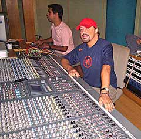

O Produtor e maestro Hugo Bellard, que participou como arranjador, produtor ou autor em mais de 1000 faixas para as grandes gravadoras supervisionará a afinação.
Suas participações como produtor ou arranjador se tornaram dezenas de discos de ouro e platina para gravadoras como EMI, Sony, BMG, CBS, Universal, Warner, Atração, Som Livre, Phillips, Decca (UK), Capitol (USA), Capitol (Mexico), RCA, e outras.
No formulário escolha se quer uma afinação radical ou natural.
O maestro usa um sistema de 1º mundo, superior aos plug-ins Melodyne, Autotunes e outros, tudo sendo desenhado no lápis digital palavra a palavra, respeitando a interpretação.
Não fica som artificial.
Para utilizar este sistema tem que conhecer música, as notas, e ter experiência em gravações profissionais de ponta.

A Afinação natural é boa para:
- Mpb, Pop, Rock, Sertanejo Universitário e Raiz, Axé, Forró, Calypso, Vaneirão, Pagode, Samba, Hip Hop melódico, Soul, Arroxa, Bailão, outros ritmos.
A afinação radical é boa para:
-Funk Melody, Funk, Techno, alguns Hip Hops, alguns Pops ou zouks, Dance e outros.